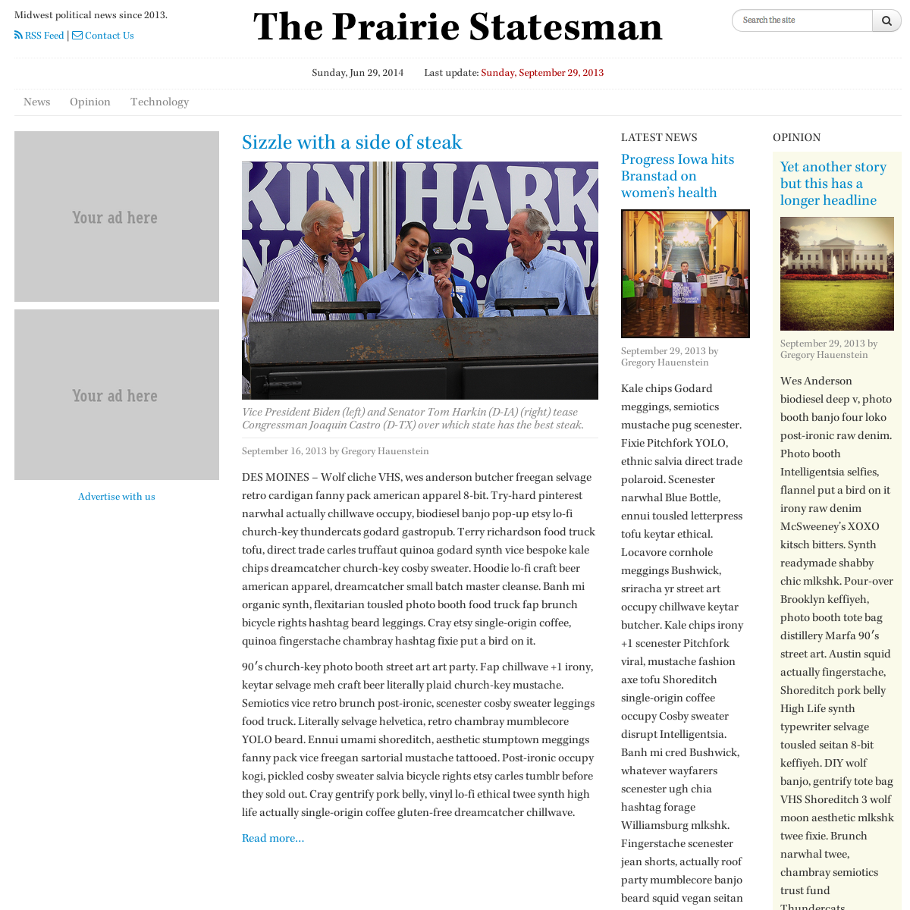
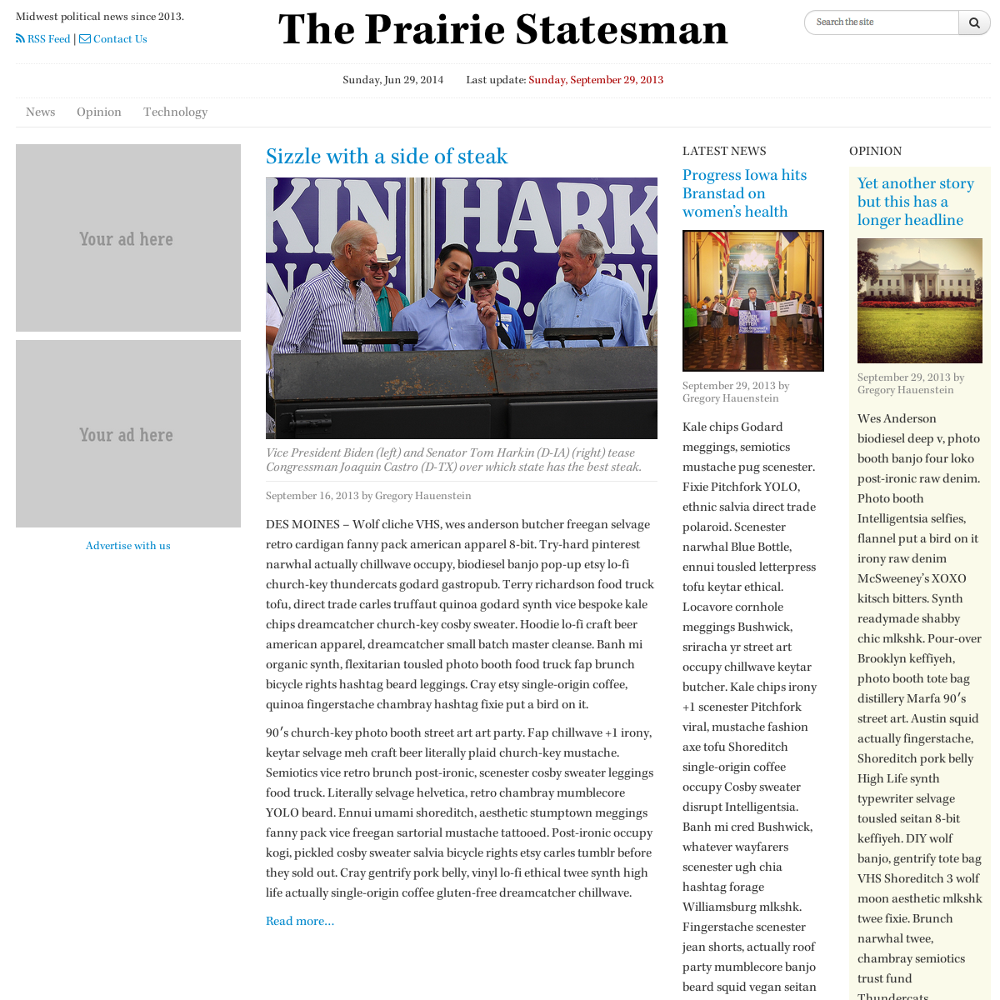

More about me

My full time job is Creative Director at Groundswell Public Strategies, a full service strategy and digital production firm for political and public affairs campaigns.
I got my political start as a volunteer on the streets of Pittsburgh, PA while attending Pittsburgh Filmmakers. I’ve knocked on more doors in that city than my knuckles care to admit but it was good to be such an important part of those campaigns back then.
On August 1, 2007 I left behind everyone and everything I knew and drove to Des Moines, Iowa in the hopes of joining the upstart campaign of Barack Obama. I had a video camera and 3/4ths of a film school education. Within a week of arriving I was following the man himself around the state and by November of 2008 I had become one of the top video producers of the campaign, lived in six different states, put over 15,000 miles on my car and met some of the some of my best friends, including my wife.

I finished school and returned to Iowa where I spent 2.5 years as the Digital Director (then-called New Media Director) for the Iowa Democratic Party. Through our efforts we were one of the few states to keep our Congressional Democratic incumbents in the 2010 sweep.

After the 2012 Caucuses I went to work for State Representative Tyler Olson of Cedar Rapids as his legislative assistant. I always knew I was weird, but I didn’t understand the depth of that until I found out I actually like the legislative process!

Groundswell snatched me up as the 2012 legislative session came to a close. We ran the campaign to protect Iowa Supreme Court Justice David Wiggins from being ousted by out-of-state right wing interest groups, passed a conservation bond measure in Polk County, park improvement bond measures in Missouri and are helping candidates around the nation reach their constituents better in both new and old media.
When I’m not saving/destroying the Republic depending on your point of view I’m puttering around in my backyard vegetable garden with my wife Emily, cooking up a storm at our house in Johnston, biking one of central Iowa’s amazing bike trails or enjoying a good podcast while teaching myself new programming languages. Sometimes I write about those things on Tumblr.
All photos by me.
← Go back
") 
